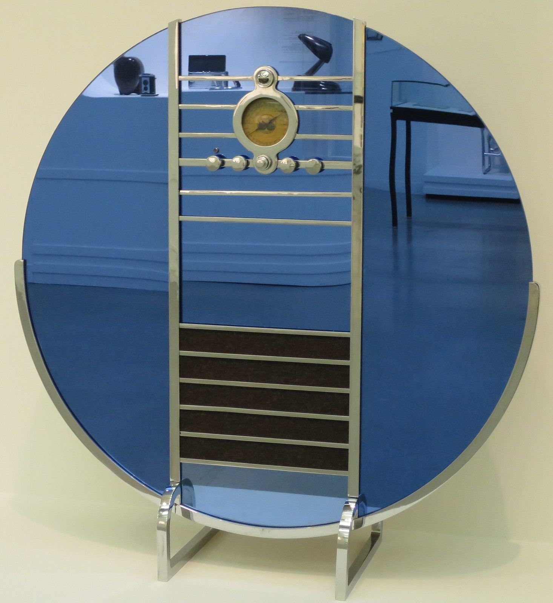

References / Product / 338
Sparton Nocturne radio, model 1186
Walter Dorwin Teague’s floor radio for Sparton: a disc of blue mirror glass more than a metre across, crossed by a chrome ladder of horizontal bars.
- Source
- Encyclopedia of Design: Nocturne, model 1186
- Creator
- Walter Dorwin Teague (designer); Sparton Corporation, Jackson, Michigan (manufacturer)
- Made
- 1935 (unveiled at the New York Radio Exposition, September 1935)
- Style
- Streamline Moderne (agent-proposed, not yet reviewed by a person)
- Moods
- Luxurious, machine-age, cool
- Evidence
- Downloaded and inspected Wmpearl’s 2014 photograph of the Wolfsonian–FIU copy on Wikimedia Commons at 1920 px. The Decorative Arts Trust caption identifies the Wolfsonian copy as XX1990.168, from the lobby of the Park Central Hotel, Miami Beach; I did not read the Wolfsonian record itself.
- Reviewed
- Rights
- Open license, stored. License: CC0-1.0. Rights policy

Context
Unveiled at the New York Radio Exposition in September 1935, the Nocturne was made of midnight-blue Tufflex mirror glass, satin chrome steel, and painted wood, 46 in high and 43¼ in wide, priced at $350 to $375. About two dozen survive; copies are in the Wolfsonian–FIU and the Dallas Museum of Art. Encyclopedia of Design.
The Wolfsonian copy (XX1990.168) came from the lobby of the Park Central Hotel, Miami Beach. Decorative Arts Trust.
Observed
- A large disc of dark blue mirror glass stands on edge; a chrome band runs around its lower half.
- A vertical chrome frame crosses the disc from top to bottom, filled with thin horizontal chrome bars at regular spacing.
- In the upper part, a round dial in a chrome ring sits between the bars, with a row of five round chrome knobs below it.
- In the lower part, the bars cover a dark speaker cloth.
- Two chrome feet with rounded ends hold the disc. The mirror reflects the gallery around it.
Why it belongs
The Nocturne sits between the two styles: the circle and the horizontal chrome bars belong to streamlining, while the vertical axis, symmetry, and luxury glass point to Art Deco. It is useful as a boundary case.
Borrow
Put a ladder of thin horizontal rules inside a circle to make a badge or hero mark.
Use chrome-gray rules on navy for a night version of the palette.
Measured
Machine-extracted by tools/image-traits.py on . Full measurement.
- Mean chroma
- 0.2
- Palette
- #28486f 21%
- #436795 16%
- #d7d3b4 15%
- #c4c09f 13%
- #241f18 5%
- #7f8066 5%
- #a1a284 4%
- #adad90 3%

